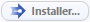
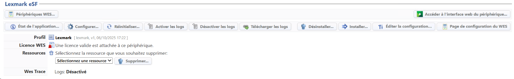
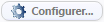

WES Lexmark - Installer le WES sur la file
Présentation de la section WES
Une fois le profil WES activé sur la file, dans l'interface Propriétés de la file apparaît la section Lexmark. Cette section comporte plusieurs boutons :
-
Périphériques WES : donne accès à une page présentant tous les WES configurés sur le serveur ;
-
Accéder à l'interface WEB du périphérique : donne accès au site web d'administration du périphérique ;
-
Etat de l'application : donne accès à la section Monitoring (en-dessous dans l'interface) ;
-
Configurer : permet, une fois le WES installé, d'envoyer les informations à l'application Java®. La configuration requiert l'adresse du serveur ;
-
Réinitialiser : permet de rafraîchir la page ;
-
Activer les logs / désactiver les logs : boutons permettant d'activer /désactiver la sauvegarde des logs relatifs au WES ;
-
Télécharger les logs : bouton permettant de télécharger le fichier de logs (s'ils sont activés) afin de l'analyser pour diagnostic ;
-
Désinstaller : permet à Watchdoc de désinstaller le WES sur le périphérique. Une fois le WES désinstallé, il convient de redémarrer le périphérique ;
-
Installer : permet à Watchdoc d'installer le WES sur le périphérique (peut prendre 30 sec.), ainsi que le module de badge Elatec ;
-
Ressources Supprimer : permet de supprimer la ressource Java® sélectionnée ci-après :
-
Packs de langue : packs de langue permettant de gérer le WES dans diverses langues ;
-
Logs : fichiers traces de l'application Java® ;
-
Configuration : configuration de l'application Java®. La configuration est alors remise à zéro ;
-
Accounting : comptabilisation des éléments courants pas encore envoyés au périphérique ;
-
Toutes : toutes les informations Java®.
-
Once the WES profile has been enabled on the queue, the Lexmark section appears in the Queue Properties interface. This section contains several buttons:
-
WES Devices: provides access to a page displaying all WES devices configured on the server;
-
Access Device WEB Interface: provides access to the device administration website;
-
Application Status: provides access to the Monitoring section (below in the interface);
-
Configure: once the WES is installed, allows you to send information to the Java® application. The configuration requires the server address;
-
Reset: refreshes the page;
-
Enable logs / Disable logs: buttons to enable/disable the saving of WES-related logs;
-
Download logs: button to download the log file (if enabled) for diagnostic analysis;
-
Uninstall: allows Watchdoc to uninstall WES from the device. Once WES has been uninstalled, the device must be restarted;
-
Install: allows Watchdoc to install WES on the device (may take 30 seconds), as well as the Elatec badge module;
-
Edit configuration: gives access to the WES configuration interface on the print queue;
-
WES configuration page: gives access to the WES configuration interface in Watchdoc;
-
Resources Delete: allows you to delete the Java® resource selected below:
-
Language packs: language packs for managing WES in various languages;
-
Logs: Java® application log files;
-
Configuration: Java® application configuration. The configuration is then reset;
-
Accounting: accounting for current items not yet sent to the device;
-
All: all Java® information.
-
Procédure
-
Dans la section Lexmark eSF, cliquez sur le bouton

pour finaliser l'nstallation de l'application :
Cette installation se déroule en plusieurs étapes listées dans le Rapport d'installation.
è Lorsque toutes les pastilles du rapport d'installation sont vertes, cela signifie que l'installation s'est bien déroulée et que le WES est prêt à être utilisé ;
-
cliquez sur le bouton

afin d'envoyer l'adresse du serveur vers le WES, permettant ainsi la communication entre les deux.